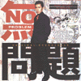

 | #えーと今月は2つ。最近ハマリまくってる空気公団と、これもとっても気にいってる福原まりさんの無問題のサントラでした。 なんだか、最近プログレファンじゃなくなってきたような気が....まぁいいや。
back to October,1999
|
|
 | #えーと今月は2つ。最近ハマリまくってる空気公団と、これもとっても気にいってる福原まりさんの無問題のサントラでした。 なんだか、最近プログレファンじゃなくなってきたような気が....まぁいいや。
back to October,1999
|
-1999.11.20
#起きたらなんだか"トラックを運転しなきゃ"と思ってました。なんか変な夢でも見たかな？
んで、とにかく。無問題のサントラ買いました、音楽は福原まりさん。このサントラ好みすぎー。すげー良いです。
ほんとは横須賀に原付を貰いに行ったんだけど、なんか相当ダメそうだったので断念。うーん、どっかに余って無いですかねー？原付。
-1999.11.14
#金曜日、何故か飲み会あるとどーしても行ってしまったり、その前に新宿のユニオンでAnekdoten/From Withinを購入、相変わらずカッチョいいや。土曜日は昼過ぎからボウリングで堀越先生に異常に曲がるボールを教えていただく、なぜか今更LONG VACATION/LONG VACATION'S POPを購入。\480だったし。
そして向ヶ丘でまた飲み。更にモトスミで部屋に帰る途中に知り合いに拉致られて日吉でラーメン、そしてモトスミでちょい飲み。
-1999.11.7
#土曜飲み会のちょい前に渋谷に寄って、BOREDOMS/VISION CREATION NEWSUNを購入、なんだかTシャツが有り、箱開けると音のするどてらいパッケージでした。新譜でCD買うのひさびさでしたけど。
でも実はそれどころじゃなくて、友達が死んでしまって。まだ実感無いんですけど、いろいろ複雑で、おなかの下の方に変な虫が棲みついてるような感覚が無くならないです、まだ。
-1999.11.3
#再演ページェントのライヴなーんて見てきちゃいました。ちょっと...感動、すごい懐かしい感じがしました、これ好きだった頃を思い出すような。
それはそうとして前日は新百合ヶ丘で飲んでまたしてもタクシー帰り、トホホホホホ。その後友達と鉄拳3、勝てない。